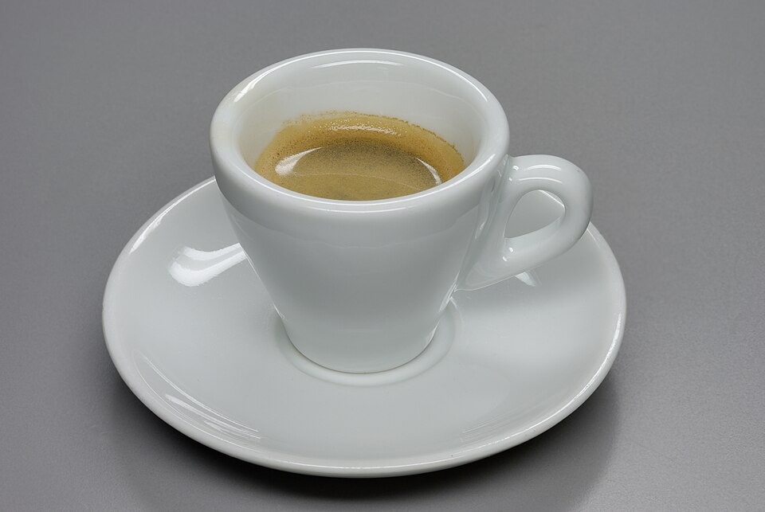
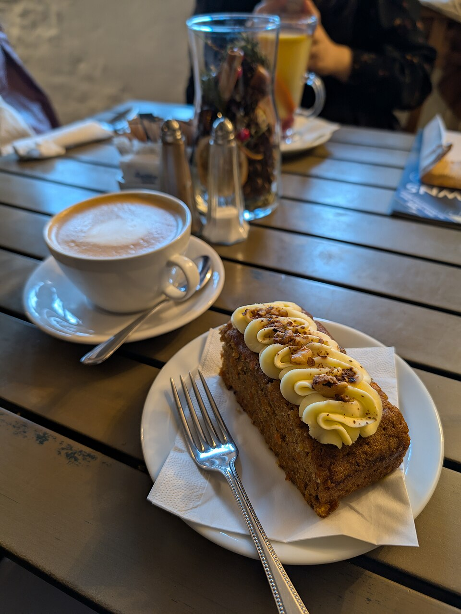

BUENOS DÍAS, INCLUSO POR LA TARDE.
Hoy, las noticias
son buenas.
Café recién hecho, algo dulce y un sitio junto a la ventana.
Eso también merece una primera página.


LA EDITORIAL / 01
No todo tiene
que ser para llevar.
Hay días que piden una pausa. Sentarse, dejar el móvil boca abajo y volver a lo sencillo: una taza, una porción y el placer de no mirar el reloj.
Miga nace como una idea de cafetería de barrio: cálida, curiosa y con la puerta abierta a los pequeños rituales. Un lugar imaginado para que la sobremesa tenga su propio capítulo.
La redacción de MigaEL PASATIEMPO / 03
¿Cómo es
tu pausa?
Elige tu taza y su mejor compañía.
Nosotros ponemos la servilleta.
CARTAS AL DIRECTOR / 04
Antes del
primer sorbo.
¿Puedo reservar o hacer un pedido?
Esta es una propuesta de diseño para un local ficticio. El combinador permite probar la experiencia, pero no realiza pedidos ni reservas.
¿Dónde veo los ingredientes y alérgenos?
Pulsa cualquier propuesta de la carta para consultar su receta de muestra y los alérgenos previstos. En un local real habría que confirmar ingredientes y trazas con su equipo.
¿Las fotografías son del local?
Son fotografías reales de referencia, con créditos y licencias disponibles al pie. Miga todavía es un concepto, no un establecimiento real.